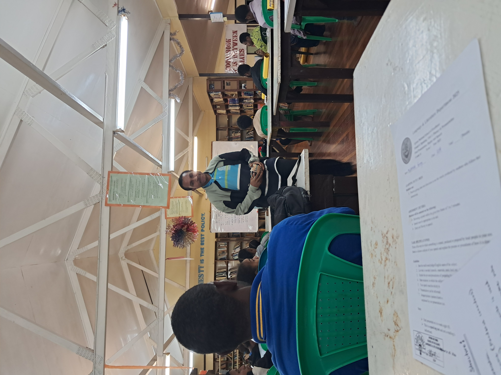
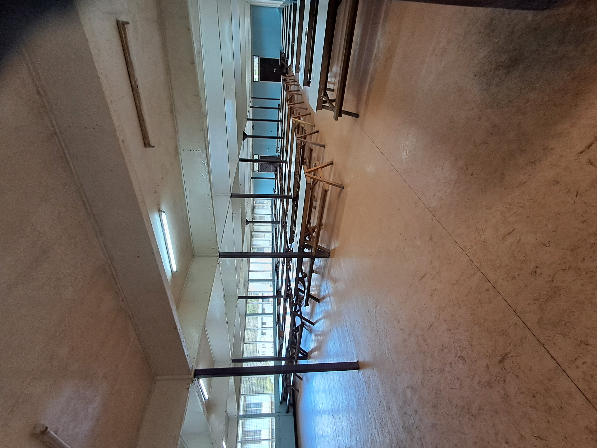
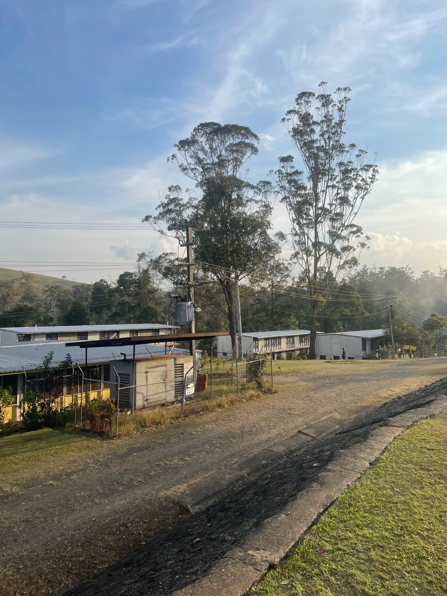
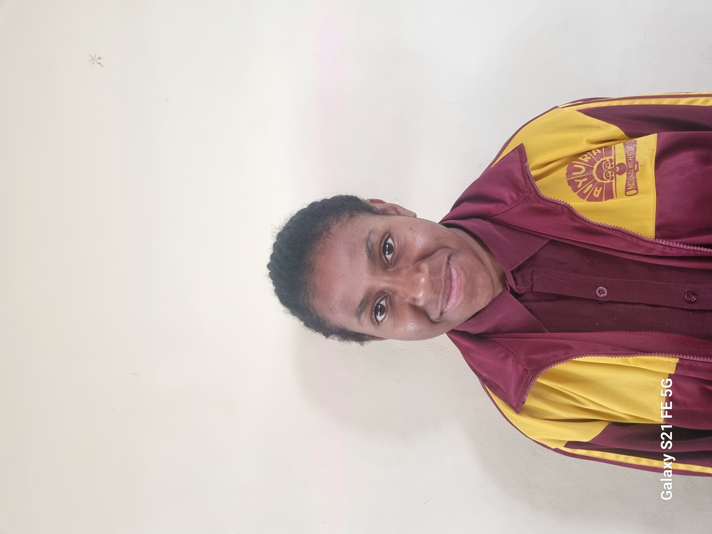
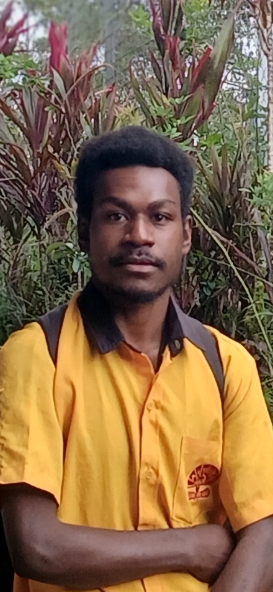

Courses We Offer
Social Science, Block Science, and STEM.
We offer Social Science as one of our major academic pathways, providing students with opportunities to explore a wide range of subjects and future careers.
We offer Block Science for students who are interested in scientific learning and wish to pursue science-related fields after school. We offer STEM to equip
students with the knowledge and skills needed foe higher education and careers in science, technology, engineering, and mathematics.
STEM
When students stream into STEM they will take up STEM Physics, STEM Chemistry, STEM Biology, STEM Mathematics, Engineering, Technology, and English.
Block Science
When students stream into Block Science they will take up Physics, Chemistry, Biology, Advanced Mathametics, and English.
Social Science
When students stream into this general streamline, they can either take up the substreams; Social Science, Block Social Science, or Business Studies.
Our School Campus
Our School campus is located in Aiyura Valley, Obura Wonenara, Eastern Highlands Province of Papua New Guinea. The school campus is huge and the surrounding
communities are friendly. Our school has many good facilities that help students learn and grow. These include the new STEM building, science laboratories,
the Social Science block, a library, classrooms, and other learning areas. The campus is very large, giving students plenty of space for learning, sports,
and other school activities. Aiyura Valley has a cool climate and beautiful scenery, making it a pleasant place to study. The people in the nearby communities
are friendly and welcoming, helping to create a safe and peaceful environment for everyone at the school.

STEM Building

Science Labs

Social Science Block
Our Facilities
Our school facilities include a school mess, ten boys dorms, four girls dorms, classrooms, school library, a computer lab, three science labs, a STEM building, a multipurpose hall,
an Audio Visual Theatre, a Basketball court, a Rugby field, a Soccer field, and a small Aidpost to help students who are sick. These facilities provide students with a safe,
comfortable, and enjoyable learning environment. They support both academic studies and extracurricular activities, allowing students to develop their knowledge, skills,
and talents.

School Library
This is the Aiyura NSOE School Library. It provides students with a quiet and comfortable place to read, study, and carry out research for their academic work.

School Mess
This is the Aiyura NSOE School Mess. It provides students with a comfortable space to enjoy their meals and build friendships with fellow students.

Boys Dorms
Further up are some of the boys' dormitories. They are an important part of campus life, giving students a place to live, connect with others, and develop independence and responsibility
while studying at the school.
What our students say
Our students proudly share their stories and experiences at Aiyura NSOE. They talk about the challenges they face, the lessons they learn, and the opportunities the school
provides, showing how the school helps them grow academically, personally and socially.

Aiyura is a beautiful place for many of us students, it is like a second home. With its beautiful sunsets and hard-working teachers it has earned a place in many of our hearts for those who have come and gone,
for those present, and will be for those yet to come. It is a place where dreams are made and visions are created. As for me personally, it is a place where I learnt many things and made many valuable
friendships with people whom I can say have a lasting impact on my life, teachers as well as students.
Jeanyllah LUCAS

Aiyura has some of the best secondary school teachers in the country. They don't teach us only in class but they also encourage us to be the best we can be as future leaders of this nation.
Paul IVAN
Do well in your grade 10 exams
to be selected here.
CONTACT US